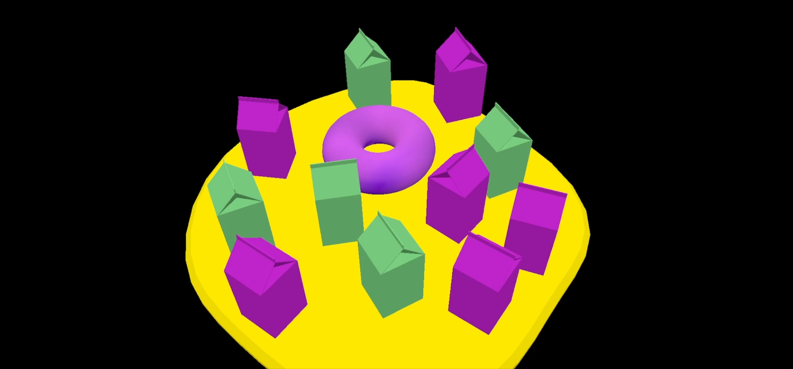

I mainly referenced the code design from "Vulkan Tutorial" and added a parser class on my own. This class is used to manage all readable data and their relationships. I also incorporated a camera class to better manage the use of cameras. The parser class reads JSON files, and I record all data, regardless of type, using a generic type called "sceneItem". Finally, I traverse once to organize the parent relationships as well as the references to meshes and instances. In the original Vulkan engine, the parser exists as a class member and will use the data structures and methods in the parser to access and call the underlying layer during initialization and drawing.
I call it as a "chaos".I wanted to use multiple levels of rotation to simulate the system of planets and satellites. Later, I found that it could be made cooler and more complex, so I added a total of four layers of rotational parent relationships. I use usercamera -> scene camera -> debug camera to demo this video.
I set parent to each sphere and balls, and animated them in timeline. Try to let them rotate with different pivot axis to have a cooler dynamics.
Provide a short overview of how to use your viewer.
user can input the scene.s72 file as the scene file to read.
For each of the following sections, describe the overall structure of your code, and reference the specific files/functions/data structures that you used. For any parts that are incomplete, discuss what you were able to do and what you tried but couldn't get working.
The purpose of this section is to get you to think critically about your code by explaining it to course staff; these thoughts may help you improve the code as you work on it in A2 and beyond. This section also forms a road map to your code that we can use while grading.
I implemmented the struct color and postion for better reading the binary file.
I didn't do anything special in vulkan.
struct Color {
uint8_t r, g, b, a;
};
struct Position {
float x, y, z;
};
I use a general struct to record all the "node" "scene" "mesh" "camera""driver", which includes all the property the have.
struct SceneItem {
int parent = 0;
int id = 0;
glm::mat4 trans;
//mesh customized
int offset = 0;
int stride = 0;
BoundingSphere bs;
//all
std::string type = "Null";
std::string name = "Null";
//root
std::vector roots;
//camera
float aspect = 0;
float vfov = 0;
float near = 0;
float far = 0;
//mesh
std::string topology = "Null";
int count = 0;
Attributes attributes;
//node
std::vector childrenList;
std::vector translation;
std::vector rotation;
std::vector scale;
int cam_id = 0;
int mesh_id = 0;
//driver
int node = 0;
std::string channel = "Null";
std::vector times;
std::vector values;
std::string interpolation = "Null";
};
I basically read all the token and whenever I read a "{" I will establish a new node and read all the attributes
after until I read "}" to stop
to draw the scene, I take care of the nodes that has either meshes or camera.
for each frame, I will firstly recompute the translation, scale and rotation of each node(driven by animation)
Then, I will let them trace backward to compute the model matrix.
Do when I draw the mesh, I could get the model matrix each meshes. So as the cameras.
To get the data in shader. I combine all the mesh vertices in a single vertex buffer, where each
mesh stores the offset and stride. I use push-constant to sent the transformation matrix each objects,
and draw them by specify the offset and stride.

I first use a callback funtiuon to read the mouse and keyboard actions. The I refect them back to
the camera translation, yaw, pitch and rotate.
for the scene camera, since I had all the nodes recording the global transformation in each frame, I just convert
the transformation matrix back to the position and lookat vector.
static void mouseCallbackStatic(GLFWwindow* window, double xpos, double ypos) {
HelloTriangleApplication* app = reinterpret_cast
I use boundingsphere as the bouding volume. The sphere is calculated by measuring all the vertices
applied with model matrix. I anaylsis the center and max radius for each mesh.
To cull the meshes, I store 6 different planes of the view frusturm like below
to calculate the intersection of each plan, I just calculate the sphere distance to measure.
std::array
you can see the drawing mesh number decrease to 0 when move camera away from the scene.
Cover, at least:
I store all the times and values in each "DRIVER" node
and foreach frame, I have a update function in parser that:
will check each "DRIVER" times and get the ratio in between two frames (start and end frame).
then I intepolate the value by this ratio with three different methods.
the slerp interpolation is quite tricky:
glm::vec3 vectorSlerp(const glm::vec3& v1, const glm::vec3& v2, float t) {
glm::vec3 unitV1 = glm::normalize(v1);
glm::vec3 unitV2 = glm::normalize(v2);
float dotProduct = glm::dot(unitV1, unitV2);
dotProduct = glm::clamp(dotProduct, -1.0f, 1.0f);
float omega = std::acos(dotProduct);
if (std::abs(omega) < 1e-4) {
return glm::normalize(glm::mix(unitV1, unitV2, t));
}
float sinOmega = std::sin(omega);
float a = std::sin((1 - t) * omega) / sinOmega;
float b = std::sin(t * omega) / sinOmega;
return glm::normalize((a * v1) + (b * v2));
}
I didn't finish this part
I didn't finish this part
NOTE: you will demonstrate your performance improvements in the next section.
I didn't finish this part
it took me too long to write a parser which is not so related to the course.